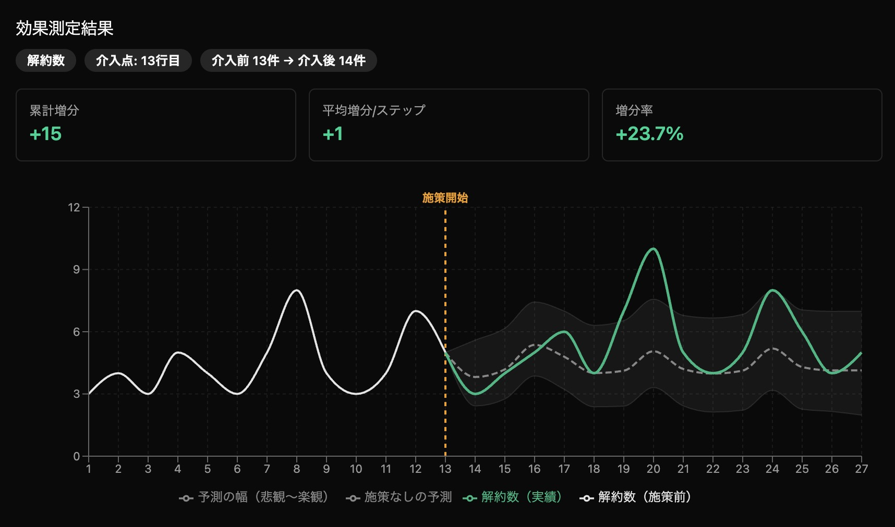

AIが"施策を打たなかった場合"を予測し、
実績との差分で、施策の純粋な効果を測定します。
Make your Parallel, easily.
Concept
パラレルテストは、自社の過去データから「施策を打たなかった場合」を予測し、実績との差分で効果を測る検証手法です。対照群も、複雑な条件設定も必要ありません。
時系列のCSVを用意するだけで、
効果検証と未来予測が一瞬で完了する。
これまでコマゴマとした設定やデータ整備に時間をかけていた効果検証が、CSVをドロップするだけで終わる。それがParallel Insightの体験です。

緑の実績ラインと、点線の予測ライン（施策がなかった場合）の乖離が、施策の効果。
Problem
施策の効果なのか、たまたまなのか。数字だけでは判断がつかない。
店舗が1つ。商品が1つ。現実には「同条件の比較対象」を用意できない。
PythonやRが書けないと因果推論ができない。でも外注するほどの予算はない。
Parallel Insightなら、売上データのCSVを1つ用意するだけ。
コードも統計知識も対照群も不要で、施策の効果を数値で把握できます。
How it works
売上・来客数・PV数など、施策の前後を含む時系列データのCSVをドラッグ&ドロップ。日付列と数値列があれば、特別なフォーマットは不要。
data.csv
「いつから施策を始めたか」をスライダーで選ぶだけ。AIがその時点を境界として、施策前のデータから予測モデルを自動生成。
Intervention Point
実績と予測ライン（パラレルライン）の乖離がグラフで即表示。累計増分、増分率、信頼区間で施策の効果を定量的に把握できる。
+23.4%
Cumulative Lift
完全ローカル処理。インターネット接続すら不要です。
売上データのCSVがあれば、すぐに使えます。
Features
データが一切外部に出ない。サーバーを経由しないため、インターネット接続すら不要。機密データも安心して分析できます。
事前学習・チューニング不要。CSVを入れた瞬間に分析が始まります。あらゆる業種のデータに対応。
楽観〜悲観の幅を可視化。「たまたまの変動」なのか「本当に効いた」のかを統計的に区別できます。
Python・Rが書けなくても、因果推論レベルの分析ができる。マーケター自身が効果検証を実行できます。
Use cases
「施策がなかった場合」の予測売上と比較することで、施策による上乗せ分を推定できます。
「セールがなかった場合の予測売上」との差分で、施策の純粋な貢献がわかります。
応募数の時系列データだけで、媒体変更の効果を検証できます。
FAQ
日付列と数値列が含まれていればOKです。売上・来客数・PV数・応募数など、時系列で推移するデータならどんなものでも分析できます。
信頼区間（楽観〜悲観の幅）が表示されるため、予測の確度を自分で確認・判断できます。データが多いほど精度は上がります。
一切送られません。すべての分析処理はお使いのPC上で完結します。インターネット接続がない環境でも動作します。
Mac（Apple Silicon / Intel）およびWindows（64bit）に対応しています。
ローカル版は無料のまま提供を続ける予定です。将来的にクラウド版を有料で提供する計画がありますが、ローカル版の機能が制限されることはありません。